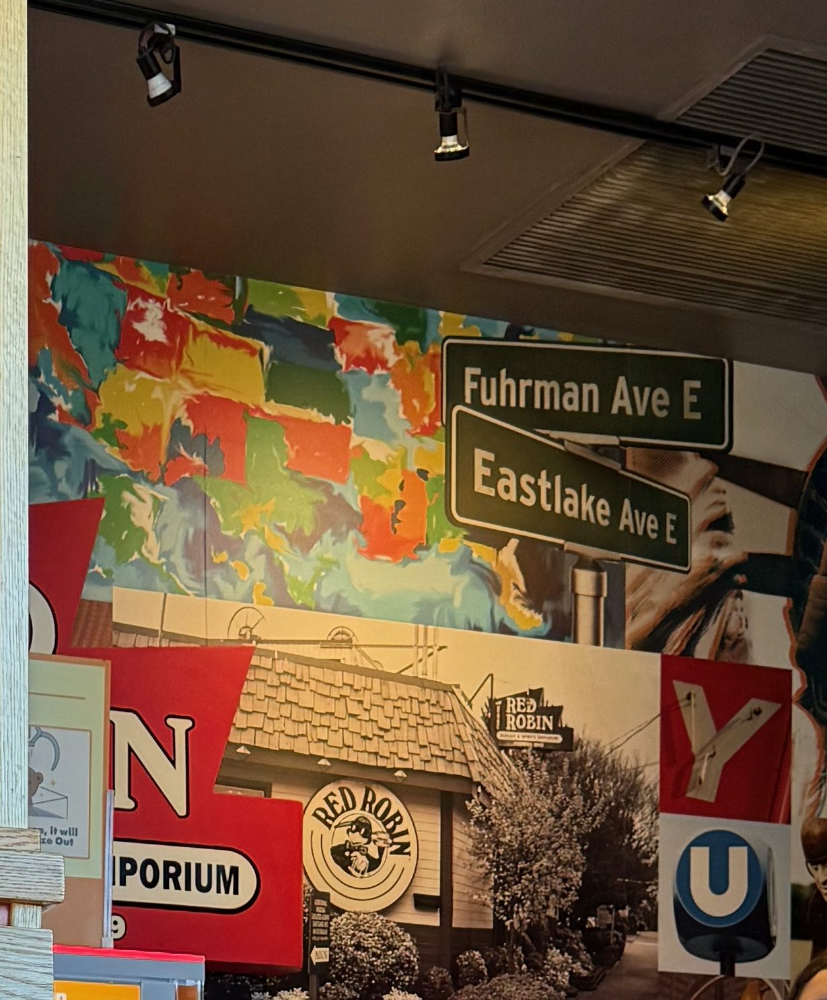
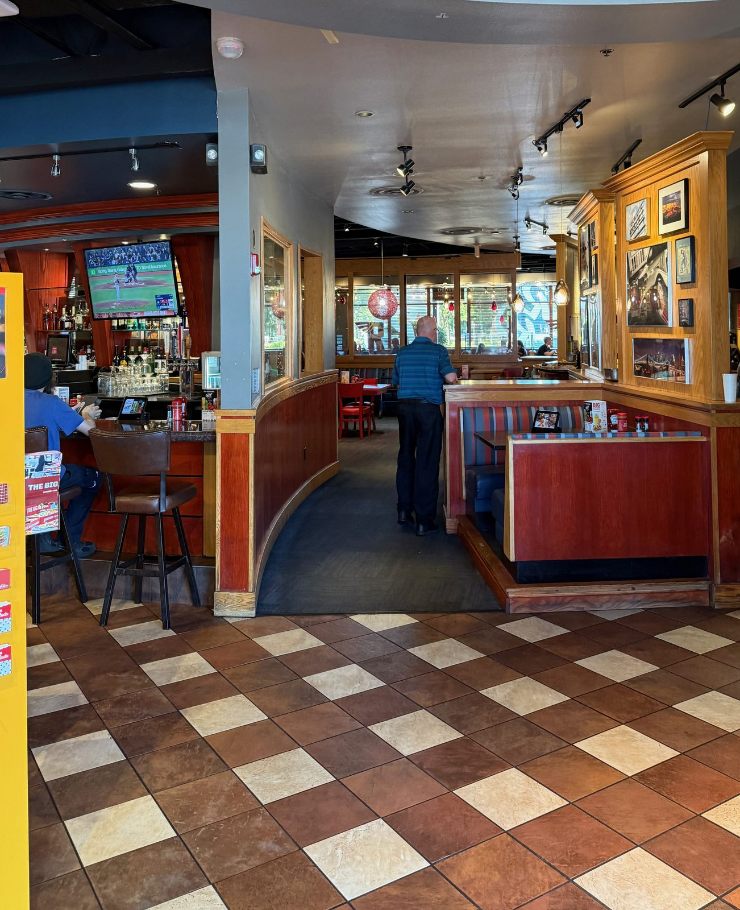
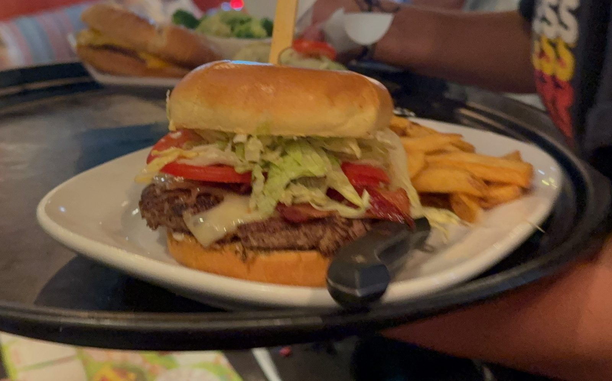

Mad Love and a Seattle Corner, at Red Robin

A quarter to six on a Friday, the last of the July sun still full on the front of the building, and I took a picture of a Red Robin sign. I want to be honest about how that felt, because it is the whole reason this entry is worth writing. It felt like the wrong thing to photograph. A travel notebook is supposed to be for the ramen counter in Beaverton and the bakery with four tables — not for a chain off Mill Plain with a parking lot and a rotunda, the kind of place you can find in thirty-eight states without trying.
Then I went inside and found a photograph on the lobby wall that changed my mind about the whole category, and after that a burger that would have changed it anyway.
The corner on the wall
The waiting area here is done as a collage — a wall of overlapping images, letterforms, a Statue of Liberty, a splashy painted map of the United States. It's the sort of thing you look past on your way to a table. But up in the corner of it there are two green street signs, crossed one over the other, and they read Fuhrman Ave E and Eastlake Ave E.

That is a real intersection in Seattle, at the south end of the University Bridge, and directly beneath the signs is a sepia photograph of the small shingled building that stood on it — the round Red Robin logo out front, the bird in his circle, and a sign reading Burger & Spirits Emporium. That building is where this entire thing started.
The short version, because it is a good one: the building went up in 1940 and opened as Sam's Tavern. Sam sang in a barbershop quartet, and one of the songs he could not stop singing was When the Red, Red Robin Comes Bob, Bob, Bobbin' Along — so often that the place ended up being called Sam's Red Robin, apparently more by the customers than by him. In 1969 a Seattle restaurateur named Gerry Kingen bought it and began building out from there. The first franchise opened in Yakima ten years later. The original closed in 2010 and was pulled down in 2014, and there are apartments on the corner now.
So the mural in a suburban Vancouver lobby is not decoration in the way I had assumed. It is a photograph of a demolished tavern at Fuhrman and Eastlake, hung up two hundred and fifty miles south of it, because that is the address this company is from. Which is my argument for why this entry exists: in the Pacific Northwest, Red Robin is not an out-of-town chain that turned up. It is a local business that got enormous. The strip-mall rotunda is the descendant, not the imposter.

The MadLove
Now the burger, which is the actual reason I would tell you to go.
The MadLove arrived at half past six, and I will say it plainly the way I said it at the table: this is one of the best burgers in the world. I am aware of how that sounds in an entry about a chain restaurant. I am saying it anyway.

The thing that makes it is the sweet jalapeño relish. It is the element I would try to describe to someone who had never had one and would probably fail to, because "sweet jalapeño" reads on a menu like a compromise — heat sanded down for a family restaurant — and it is not that at all. It is genuinely sweet and genuinely jalapeño, both at once and neither apologising for the other, and it is to die for. Then the onion and the cheese get in with it, and the three of them together do something better than any of them separately. That is the whole trick of the burger. Not one loud ingredient — a combination that adds up.
For the record, the menu describes the MadLove as candied bacon, pepper jack, Swiss, a cheddar-Parmesan crisp, sweet jalapeño relish, smashed avocado, lettuce, tomato and onion, on a black-and-white sesame seed brioche bun. I'll note that the one in front of me came on a plain glossy bun with no sesame on it, which is either a change at the counter or a change on the menu I can't account for from a photograph. I mention it only because I'd rather record what actually turned up than copy the description off the website and call it reporting. Three cheeses is not a marketing line, though. You can see one of them going over the edge of the patty in the picture above before it ever reached the table.
The steak fries came with it, and they're bottomless here as they are at every one of these — which is a fact about the chain rather than a discovery, but it is a fact I've never once resented.
The honest part about the fourth star
I've given this four, and I want to explain the gap, because I've just called the burger one of the best in the world and four stars on this shelf means I'll be going back on purpose rather than the top of it.
The gap is not the burger. The burger is a five. The gap is everything around it, and it's the ordinary gap that comes with the format — a large room off a parking lot, a ball game over the bar, a lobby bench with a queue on it at a quarter to six on a Friday, a claw machine by the door. None of that is a complaint. It is what the place is for, and there were families in there doing exactly what the room is built to let them do. But it is not a room I'd cross a city for, and the scale at the top of this page is only worth printing if I keep those two judgments separate instead of averaging my enthusiasm into a five.
Sun–Thurs 11:00am – 10:00pm · Fri–Sat 11:00am – 11:00pm — off the front door, which is where I'd check it rather than trusting me.